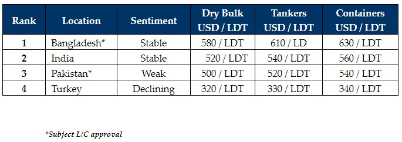

inWeekly Demolition Reports15/05/2023

After some recent alarming declines in the sub-continent markets, we appeared to have reached the bottom early this weekas a certain “stability” across the markets led to some greater confidence to acquire some of the slim pickings of tonnage currently available for recycling.
However, as the week came to an end, global currencies seemed to suffer against the U.S. Dollar in unison, as all of the major ship recycling destinations faced some declines (especially in Pakistan), leaving sentiments under pressure. This, even though local steel prices started leveling out after weeks of flatlining and even declining by about USD 25/LDT in India over the course of the month, while Bangladesh likewise deteriorated during April where Buyers finally emerged eager to negotiate post-Eid.
As we head into these traditionally quieter summer / monsoon months, the number of available candidates remains low and by some accounts, seems to have slowed even further this week, as charter markets for the previously beleaguered Dry Bulk and Container sectors continue to display a greater stability to keep vessels trading.
Pakistan expectedly remains out of the picture as political and economic uncertainty continues to wreck the country with this most recent arrest of Ex-Prime Minister Imran Khan and impending domestic unrest, in addition to the Pakistani Rupee that has further depreciated to record lows against the U.S. Dollar, leaving End Buyers reeling once again.
There is also the upcoming Bangladeshi budget in early June to be aware of, as many End Buyers are choosing to wait-and-watch the results of the budget before offering firm on tonnage once again, even though there are few expectations of any significant changes to be made for the ship recycling sector.
Finally, the Turkish market remains suspended in nowhere land, leading to absolute silence.
As prices therefore stabilize across sub-continent markets and demand seems as though it is ramping up again after the various holidays, we can only hope that a trickle of vessels we are so far seeing starts to increase and empty plots start to fill up again.
For week 19 of 2023, GMS demo rankings / pricing for the week are as below.

📄 Download PDF: Ship-recycling-market-insight-week-19-2023-Looking-Up.pdfSource: GMS,Inc. ,https://www.gmsinc.net/gms_new/index.php/web